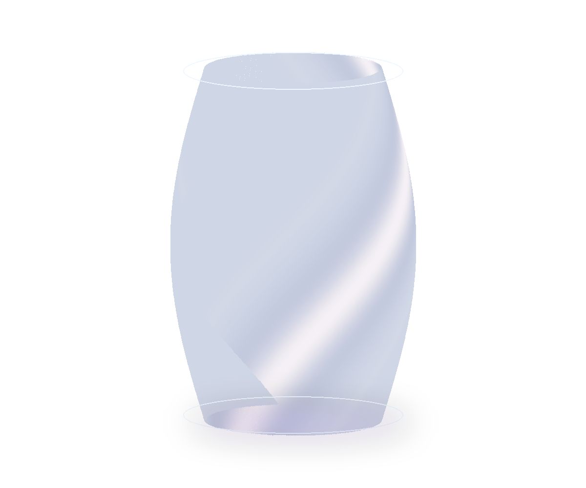

本文へ
PRISM
◯
LIGHT, HELD IN FORM.
EXHIBITION / 26.10 — 26.12
STUDIES IN REFRACTION / 001
Light
takes form.

GLASS / LIGHT / SPECTRUM
SPECIMEN
01
Twisted light
光をひねる。一本の曲線が、見る角度の数だけ違う色を抱く。
ORIGINAL DIGITAL GLASS STUDY
+
REFRACTED / 42°
01
TWIST
02
COUNTER
03
UNDULATE
光の色
0°
標本01 / TWIST — 光の色 0°
その透明に、
触れたくなる。
かたちの内側に、色がある。
ガラスと光、そのあいだを見つめる展示室。
PRISM
COLLECTION / 03